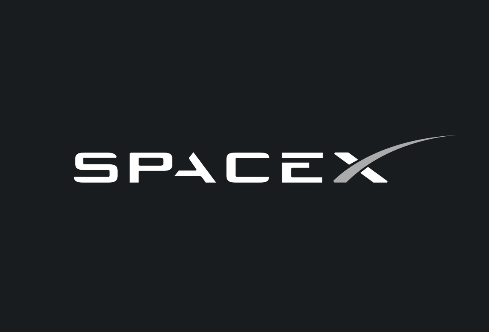
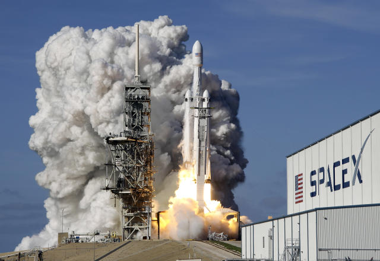
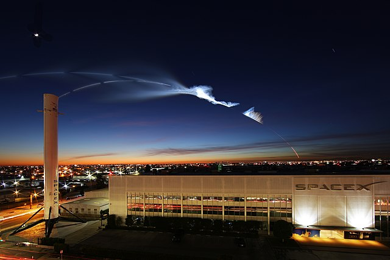
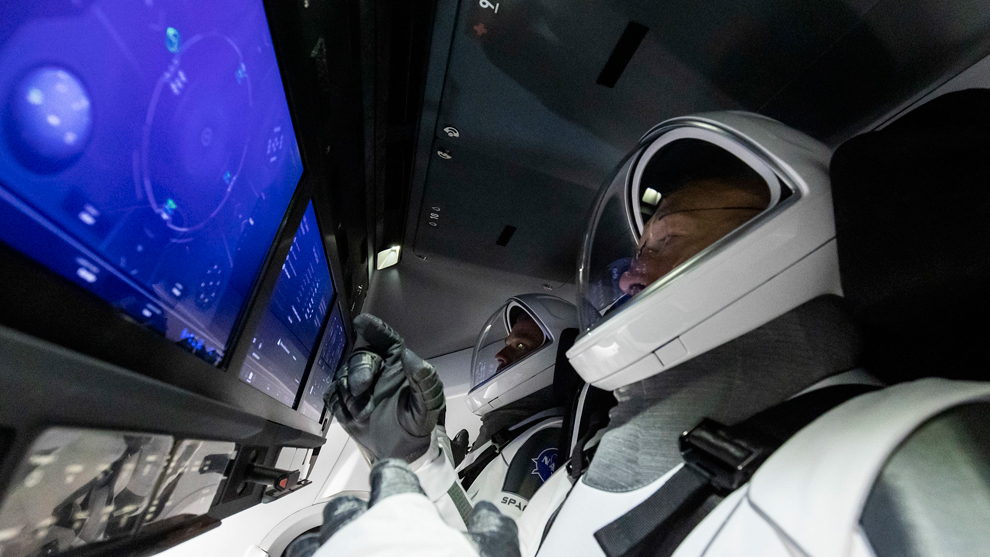
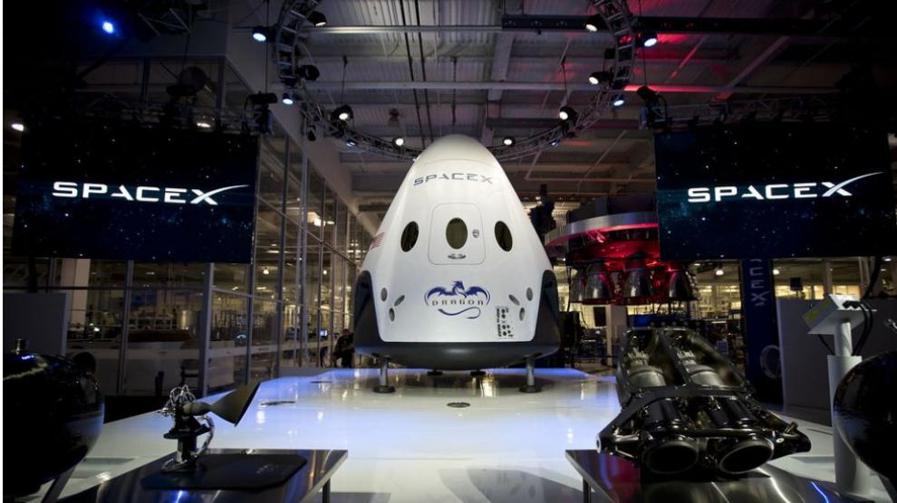

Marioni Ferretiz Medina 182860
OBJETIVOS1.-Lograr reducir de forma considerable los costos aumentando al mismo tiempo la flexibilidad que puede existir en los viajes al espacio, incluyendo la reutilización de los cohetes una vez que éstos han finalizado su misión.
2.-Poder realizar viajes espaciales con la idea principal de habilitar la vida en otros planetas, principalmente a Marte.

Introducción; Space X, es una empresa de transporte espacial, turismo espacial y fabricadora de naves espaciales con sede en los Estados Unidos.
Descripción; En este tema veremos los avances de Space X en el espacio, el impacto en el mundo y como será el futuro con una empresa como Space X, al mismo tiempo contestaremos preguntas frecuentes.

El origen de SpaceX se remonta al año 2002 cuando Musk, el fundador de la empresa y varios de sus amigos realizaron un viaje a Rusia para adquirir un misil intercontinental que había sido restaurado. En ese momento, Musk no estaba intentando crear un negocio de este tipo sino que, buscaba la forma de utilizar parte de su fortuna para reavivar el interés de los financiamientos hacia la NASA y a la exploración del espacio exterior.
HISTORIALa historia de SpaceX inicia en el momento en que Elon Musk decide utilizar cargas útiles al espacio, su idea principal era la de enviar ratones a Marte y que luego éstos pudieran regresar. Al principio, la compañía Space X era un negocio pequeño y muchos satélites pequeños que ya existían tenían una serie de dificultades para poder ser lanzados adecuadamente, es aquí donde nace la historia de SpaceX, una empresa que ganó importancia por intentar hacer las cosas con mayor velocidad a pesar de que sus primeros intentos fracasaron. En el año 2008, la compañía entendió que el negocio de los satélites pequeños no tenía mucho futuro y decidieron entonces enfocarse en el Falcon 9. A partir de ese momento recibieron un contrato con la NASA lo que le dio vida a la compañía.
ANTECEDENTESEntre los años 2010 y 2013, SpaceX logró lanzar cápsulas que lo llevarían finalmente a la Estación Espacial Internacional, a pesar de que lanzaba pocos cohetes empezó a anunciar el uso de cohetes reutilizables. Luego de muchos intentos, el 22 de diciembre del año 2015 lograron finalmente una misión con éxito aterrizando un cohete de refuerzo. A partir de este momento, la compañía tomó más posición en el mercado y se ha logrado dar a conocer como un verdadero líder en asuntos de tecnología.
oHoy SpaceX se mantiene como una empresa privada que, tan solo en los últimos meses, ha levantado unos mil millones de dólares en dos rondas de inversión. La mayor innovación de SpaceX es que sus cohetes son reutilizables por lo que se reduce sustancialmente el costo.
Información reciente y noticias importantes de Space X para el mundo;
1.-Después de dos años de haber otorgado un primer contrato a SpaceX, la NASA anunció que eligió a la compañía espacial estadounidense Blue Origin para construir un segundo sistema de alunizaje, destinado a transportar astronautas a la superficie de la Luna.
Recuerda que puedes dar click aqui para ver la noticia.
2.-La empresa aeroespacial norteamericana SpaceX se dispone a lanzar su cohete Falcon 9 desde Space Launch Complejo 4 Este en la Base de la Fuerza Espacial Vandenberg en California con 16 satélites de la compañía de comunicaciones satelitales OneWeb a la órbita terrestre baja (LEO). El cohete Falcon 9 de SpaceX también transportará satélites Iridium. Este será el lanzamiento número 19 de OneWeb hasta la fecha a medida que la compañía avanza hacia la cobertura global.
Recuerda que puedes dar click aqui para ver la noticia.
3.-La compañía SpaceX, de Elon Musk, probó su nuevo sistema de motores llamado Starship, que cuando sea lanzado en las próximas semanas será el cohete más grande de la historia. Starship forma parte del proyecto de largo plazo de enviar naves tripuladas a Marte. Sigue las últimas noticias en Univision.
Recuerda que puedes dar click aqui para ver la noticia.
4.-Los nuevos cohetes sin probar suelen experimentar problemas. En los últimos dos años, tanto Corea del Sur como Japón intentaron lanzar nuevos cohetes que tampoco lograron alcanzar la órbita, mientras que compañías comerciales como Virgin Orbit y Relativity Space también han perdido cohetes recientemente.
Recuerda que puedes dar click aqui para ver la noticia.



El desafío de SpaceX o cuánto cuesta lanzar un cohete al espacio
La reutilización es una vieja conocida de la exploración espacial, pero todos los estudios que han manejado las compañías aeroespaciales hasta ahora apuntan a que solo es rentable con una altísima tasa de lanzamientos anuales (cerca del medio centenar por año como mínimo). Ergo, como el mercado comercial de satélites es muy limitado, la reutilización es un callejón sin salida. Además el fantasma del transbordador espacial —un sistema en el cual la reutilización parcial de sus componentes no solo no abarató los costes, sino que los disparó— era un espectro que sobrevolaba cualquier iniciativa relacionada con la reutilización. Pese a todo SpaceX apostó por ella y decidió implementar la tecnología de aterrizaje vertical para la recuperación completa de la primera etapa. Esta tecnología llevaba décadas en desarrollo.

:format(jpg)/f.elconfidencial.com%2Foriginal%2F55e%2Fbb4%2Ff2e%2F55ebb4f2e8949ed3dc69424ca12539b3.jpg)
Prueba de los azulejos térmicos de la Starship. (SpaceX)
Nueva fábrica y nuevo diseño de nave para Starlink El Starship fue obviamente otro de los focos de su presentación. Musk mostró una nueva versión diseñada exclusivamente para poner satélites Starlink 2.0 en órbita, con una especie de ranura horizontal por la que saldrían los aparatos como si fuera una especie de dispensador de caramelos Pez.
:format(jpg)/f.elconfidencial.com%2Foriginal%2Fdfb%2F794%2F4a0%2Fdfb7944a08118bf5b3bd9159d5a7a4ee.jpg)
Elon Musk ha revelado los planes para el futuro inmediato de SpaceX en una presentación interna a sus empleados, una fascinante visión que incluye una nueva versión de su nave Starship exclusivamente diseñada para desplegar sus nuevos satélites Starlink y una gigantesca fábrica futurista para construir estas naves en el Kennedy Space Center.
Por ahora, SpaceX está batiendo todos los récords de lanzamientos, con una media de un lanzamiento por semana de sus cohetes Falcon 9. Además, sus lanzamientos tripulados están siendo un éxito, con la primera misión enteramente formada por civiles a la Estación Espacial Internacional.
Uno de los datos más interesantes es el uso de la red Starlink. Extrañamente, aunque ahora mismo tienen 2.400 satélites de primera generación en órbita, solo 1800 están operativos. Musk afirma que, en los próximos meses, SpaceX tendrá la mitad de todos los satélites activos del planeta gracias a estas constelaciones para acceder a internet.
¿Te gustaría trabajar en SpaceX? La exitosa compañía aeroespacial de Elon Musk cuenta con interesantes oportunidades de empleo y prácticas dirigida a perfiles muy variados, eso sí, predominan las ofertas para ingenieros.
Perfiles y categorías laborales en las que puedes trabajar en SpaceX Al tratarse de una empresa de gran tamaño y planes tan ambiciosos, la necesidad de contratar talento altamente cualificado en diferentes ámbitos y perfiles profesionales, se hace notar. Esta es la lista de categorías de empleo en las que puedes trabajar o hacer prácticas en SpaceX, la mayoría vinculadas a la ingeniería en sus diferentes ramas:

1.-SpaceX. (s. f.). SpaceX. https://www.spacex.com/
2.-Díaz, J. (2022, 6 junio). Elon Musk revela su plan maestro para SpaceX en 2022. elconfidencial.com. https://www.elconfidencial.com/tecnologia/novaceno/2022-06-06/elon-musk-spacex-starship-starlink_3437310/#:~:text=Elon%20Musk%20ha%20revelado%20los%20planes%20para%20el,construir%20estas%20naves%20en%20el%20Kennedy%20Space%20Center.
3.-Briceño, G., V. (2021, 2 diciembre). SpaceX | Qué es, historia, misiones, vehículos, objetivos, logros, satélites. Euston96. https://www.euston96.com/spacex/
4.-Aeroespacial, A. (2023, 19 mayo). SpaceX se dispone a lanzar 16 satélites de OneWeb - Actualidad Aeroespacial. Actualidad Aeroespacial. https://actualidadaeroespacial.com/spacex-se-dispone-a-lanzar-16-satelites-de-oneweb/